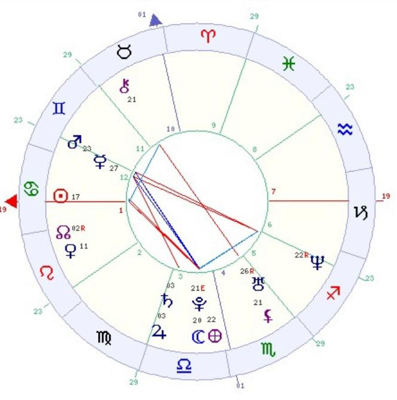

Mandala Astrolágica

- SOL em CÂNCER
- LUA em LIBRA
- MERCURIO em GÊMEOS
- VENUS em LEÃO
- MARTE em GÊMEOS
- JUPTER em LIBRA
- SATURNO em LIBRA
- URANO em ESCORPIÃO
- NETUNO em SAGITÁRIO
- PLUTÃO em LIBRA
- MANDALA ASTROLÓGICA
- Fogo: 2 Terra: 2
- Ar: 7 Água: 5
- Cardeal: 9 Fixo: 4 Mutavel: 3
Planetas nos signos
Os planetas nos signos revelam como a energia característica de cada planeta pode agir, mesclada à energia do signo em que se encontra. As combinações são inumeráveis e podem revelar os poderes e possibilidades que cada pessoa tem, suas capacidades ou fraquezas.
SOL EM CÂNCER
O canceriano é retraído e tímido, mas ainda assim muito sociável, porque detesta a solidão. Gosta do lar e da família. Tem boa memória e sabe o que quer. Provavelmente coleciona coisas. Gosta de cozinhar, de comer e receber bem. É bastante sentimental, caprichoso e impaciente, porém romântico e discreto. É impressionável e capta as vibrações do ambiente
LUA em LIBRA
A pessoa com a Lua em Libra sente necessidade de que os outros gostem dela , o que não é difícil porque é delicada, encantadora e diplomática. Detesta a solidão e gosta de ser aprovada em sociedade. É vaidosa e cuida da aparência. Suas impressões sensoriais são fortes e só é feliz quando vive um relacionamento. Precisa da harmonia e do equilíbrio para florescer. Gosta do requinte e se preocupa com as aparências.
MERCÚRIO em GÊMEOS
A pessoa com Mercúrio em Gêmeos é versátil, imparcial e tem capacidade de compreender a verdade. Sua mente é ágil e alerta. É inteligente, tem facilidade para aprender. Adapta-se facilmente a situações novas. É amante dos empreendimentos intelectuais. Deve prestar atenção para não exagerar em sua necessidade de mudanças e novidades.
VÊNUS em LEÃO
A pessoa que tem Vênus em Leão é ardente e romântica, com comportamento teatral. Ama a vida e ama o amor. Tem afetos duradouros. É sincera e leal. Gosta de arte, de teatro e espetáculos. Precisa se divertir, aprecia o estilo refinado de vida. Tem um lado afetivo intenso, porém é muito seletiva e exigente no amor.
MARTE em GÊMEOS
A pessoa com Marte em Gêmeos é espontânea. Tem grande habilidade manual. É observadora, excitável e muito esperta, precisando desenvolver a disciplina e a concentração. Costuma fazer muitas coisas ao mesmo tempo. Tem grande senso de justiça e de liberdade. Sexualmente, muda de relacionamentos profundos para os superficiais com a maior facilidade. Talvez mantenha mais de um parceiro para sua completa satisfação.
JÚPITER em LIBRA
Quem tem Júpiter em Libra tem senso de justiça apurado, é elegante, sincero e imparcial. Ninguém como essa pessoa para analisar todos os lados de uma questão e assim, os outros confiam em seu julgamento. Costuma ser amável com todos e é muito alegre. Mas detesta o trabalho manual. Refinada e idealista, ela floresce em ambientes requintados, pois almeja o sucesso social.
SATURNO em LIBRA
A pessoa com Saturno em Libr é sempre muito educada e correta. É agradável, tem grande senso de justiça e é imparcial. Talvez se case tarde, o casamento exige paciência e o relacionamento com o outro tem de ser aprendido com esforço. Tem consciência da estrutura social, trabalha bem em equipe, mas pode ser exigente, intolerante e austera. Talvez tenha problemas renais.
URANO em ESCORPIÃO
A pessoa com Urano em Escorpião tem um grande interesse por assuntos esotéricos. É muito curiosa e gosta de decifrar esses mistérios. Tem muita energia interior e se for bem utilizada, incrementará seus relacionamentos pessoais. Mal usada se transformará em explosões de raiva.
NETUNO em SAGITÁRIO
A pessoa com Netuno em Sagitário precisa de valores religiosos e espirituais mais elevados. Por isso tem grande fé religiosa, mesmo que não seja praticante de nenhuma religião. Seus ideais são nobres, e procura o sentido mais profundo da vida. Em busca do lugar ideal faz muitas viagens.
PLUTÃO em LIBRA
A pessoa com Plutão em Libra ama a beleza e precisa de harmonia para viver bem. Preocupa-se com a justiça e com a igualdade de tratamento para todos. Vive em busca do equilíbrio, porém está sujeita a grandes reviravoltas.
CASAS ASTROLÓGICAS
As casas astrológicas significam os diferentes assuntos ou temas que norteiam nossa vida diária. Têm seus significados dinamizados pelas energias dos planetas que aparecem em cada uma delas.
ASCENDENTE ou CASA 1 em CÂNCER
O signo do Ascendente mostra o caráter da pessoa, a imagem da personalidade que atrai o contato inicial com a pessoa e é o modo como o mundo a vê. Câncer no Ascendente ou na casa 1 resulta em timidez e retraimento. Afinal, a Lua, sensitiva e volúvel, rege esse signo. Isso dá insegurança, falta de capacidade de se impor às outras pessoas. Mas Câncer na casa 1 dá propensão para a vida doméstica; é provável que o nativo cozinhe bem e aprecie a boa mesa. É um Ascendente muito emotivo, sentimental, sonhador, protetor e romântico. Mas, devido à boa memória, a pessoa fica ruminando antigos problemas.
SOL na CASA 1
A pessoa com o Sol na 1a. casa é voluntariosa, tem muita vitalidade e em geral, teve uma infância feliz. É integra, generosa e digna. Tem capacidade de liderança. É ambiciosa e irradia autoridade. É bastante extrovertida e terá muitos êxitos pessoais.
VÊNUS na CASA 1
A pessoa que tem Vênus na 1a. casa é bela, harmoniosa, equilibrada e elegante. Tem boa sorte e temperamento gentil. Adora a vida social, o começo de vida também deve ter sido agradável. Gosta de ambientes selecionados, das artes, das festas. Gosta de doces e isso dá tendência a engordar.
CASA 2 em LEÃO
A segunda casa do mapa astrológico se refere aos suprimentos e aos recursos. É a casa das finanças e do que o nativo adquire por meio do trabalho. Ou, ao menos, se refere ao desejo de ganhar esse dinheiro. Essa casa também inclui as propriedades e os assim chamados bens móveis. O signo que estiver nessa casa determinará a importância do dinheiro na vida da pessoa. Leão na casa 2 faz com que o dinheiro apareça de alguma forma, para ser gasto de forma pródiga, mesmo que não pertença à pessoa. Leão nessa casa dá tendência a esbanjar os recursos. Quem tem Leão na segunda casa costuma ter êxito financeiro na vida, inclusive contando com o apoio de alguém próximo, porém deve controlar a tendência a ser generoso e gastador demais.
CASA 3 em VIRGEM
A terceira casa diz respeito à comunicação. É a casa que inclui irmãos, vizinhos, pequenas viagens e lugares em que são trocadas informações. Virgem na 3a. casa torna a pessoa inteligente, infinitamente paciente, dando paixão inusitada pelos detalhes. Isso é excelente para a pesquisa e as aplicações científicas. Tudo o que ela aprende resulta de fazer uma análise completa da situação. Virgem na terceira casa diz que a pessoa trabalhará arduamente e se esforçará diligentemente, mesmo que não haja compensação nem reconhecimento.
LUA na CASA 3
Com a Lua na 3a. casa, a pessoa é intelectualmente curiosa, e assim sendo, tem personalidade fascinante. Tem muita imaginação, mas infelizmente é dispersiva. Tem talento literário, gosta de escrever. Gosta muito de viajar, embora aprecie também a vida doméstica. Pode haver várias mudanças em sua vida. Tem boa memória. Convive bem com os irmãos e vizinhos, mas tende a se apegar às pessoas.
JÚPITER na CASA 3
Quem tem Júpiter na 3a. casa é muito otimista o que fica evidente no que fala, pensa ou diz. Tem chance de estudar em boas escolas e sua mente é clara. É provável que goste de escrever, ao menos de ler bastante. As viagens curtas são favorecidas, o que resulta em finais de semana bem aproveitados.
SATURNO na CASA 3
A pessoa com Saturno na 3a. casa é paciente, realista e não tem tato. Cresceu sentindo-se só. É muito responsável e tem concentração mental. Não faz muitas viagens, pois seu estilo de vida a obriga a ficar presa ao lugar em que mora ou trabalha.
PLUTÃO na CASA 3
As reviravoltas da vida de quem tem Plutão na 3a. casa acontecem por conta do amor. Suas atitudes mentais não são indiferentes. Seu relacionamento com os irmãos é estranho demais e muitas vezes é necessário introduzir mudanças radicais em sua vida. Talvez também tenha problemas com vizinhos.
CASA 4 em ESCORPIÃO
A quarta casa é uma área subjetiva. Diz respeito ao lar, à segurança básica, à influência dos pais, à criação na infância, à hereditariedade, além de descrever as condições gerais no fim da vida. Escorpião na 4a. casa dá preocupação com a descoberta de novas profundezas na própria natureza humana. A pessoa costuma herdar dos pais um jeito passional de encarar a vida e as relações familiares. Quem tem Escorpião na 4a. casa em geral passa por crises e discussões na infância e talvez herde imóveis da família. As condições do fim da vida podem ser incertas e diferentes de todo o resto da sua existência. A própria pessoa desejará essas mudanças.
CASA 5 em ESCORPIÃO
A quinta casa diz respeito aos relacionamentos amorosos, às habilidades artísticas, aos prazeres, ao jogo e aos filhos. Escorpião na 5a. casa deixa a pessoa passional e ciumenta no amor. Sempre há problemas em potencial entre os parceiros, e será imprescindível descartar todas as coisas superficiais e adotar uma atitude realista. Se a pessoa vier a jogar, ela ocultará seus trunfos na manga e manterá secretos seus reais objetivos. Quem tem Escorpião na 5a. casa pode ter vários filhos, com quem terá um relacionamento demasiado emocional.
URANO na CASA 5
Essa pessoa gosta de romances incomuns, de levar uma vida romântica diferente. Talvez se envolva com uma pessoa casada ou que more longe. Apaixona-se e desligase da paixão de modo repentino. A coordenação física é boa para os esportes, e é muito criativa também.
CASA 6 em SAGITÁRIO
A sexta casa mostra as tendências da saúde, o relacionamento com colegas de trabalho e as condições do emprego ou cotidiano doméstico. Sagitário na 6a. casa indica grandes negócios, corporações e instituições maiores, originados da contribuição de muitos indivíduos. Se houver demasiada franqueza com os colegas, a pessoa será considerada rude. A tarefa em mãos não é a de criticar ou abrigar dúvidas pessoais, mas sim a de seguir em frente e colher a abundância. Existe uma tendência à gota, à artrite ou à ciática. A circulação sanguínea pode apresentar problemas.
NETUNO na CASA 6
A pessoa com Netuno na 6a. casa deve tomar cuidado com todo tipo de remédios e drogas pois tem um organismo muito sensível. Sua dieta deve ser leve e digerível. Deve se precaver contra anemias. Se trabalhar em hospitais, sanatórios ou indústrias químicas poderá sair-se muito bem. Talvez tenha alguma doença de difícil diagnóstico.
CASA 7 em CAPRICÓRNIO
A importância das outras pessoas é revelada pela condição da sétima casa. Por isso ela fala de casamento, de associações comerciais, do cônjuge e dos inimigos declarados. O mundo é um gigantesco complexo de infinita variedade. Cada um de nós está aparelhado para selecionar e se concentrar na pessoa específica que nos interessa mais, de acordo com o signo que estiver nessa casa. Com Capricórnio na 7a. casa, a pessoa é lenta, madura, obstinadamente persistente. O casamento é muito sério, um pouco frio. O cônjuge pode ser muito mais velho. A vida tende mais para a reclusão do que para a sociabilidade. As sociedades comerciais estão fadadas ao sucesso, porém o desenvolvimento é bastante lento.
CASA 8 em AQUÁRIO
A oitava casa diz respeito às heranças, ao dinheiro do cônjuge, à sexualidade e à capacidade de renovação. A oitava casa também revela a capacidade de lidar de modo eficaz com as alterações demasiado arrasadoras das condições primárias da vida. Também diz respeito à morte, vista como uma transição de " um estado psíquico para outro ". Com Aquário na 8a. casa, no que diz respeito a heranças, as situações são inusitadas. A pessoa pode receber um legado súbito, ou alguma coisa que um amigo lhe deixou. Achará isso uma situação de sorte rara. A pessoa acha o potencial do futuro mais interessante do que a realidade do presente.
CASA 9 em PEIXES
A nona casa representa o pensamento mais elevado e a educação formal, em que as opiniões são moldadas e compartilhadas com os outros. Na prática se trata das leis, da religião, dos princípios universais. Essa casa diz respeito às viagens longas e às aspirações espirituais. Com Peixes na 9a. casa, a crença nos princípios é inabalável, principalmente os baseados nas leis espirituais mais elevadas. O materialismo raras vezes é critério para a verdade, visto que as crenças são centralizadas nos valores espirituais que transcendem as considerações práticas. Ideais românticos têm pouca chance de se realizarem porque são confusos. As viagens por mar ou para locais com praias são muito agradáveis.
MEIO DO CÉU ou CASA 10 em TOURO
A décima casa diz respeito à ambição, ao reconhecimento e ao sucesso. Significa a carreira, as possibilidades de êxito social, o caminho que a própria pessoa escolhe para sua vida. Com Touro na 10a. casa, a pessoa é atraída pelo lado financeiro do sucesso e seus objetivos estão focados em status e prestígio. Por não serem pessoas muito adaptáveis a receber ordens, terão maior sucesso em cargos executivos. Mas precisarão aprender a delegar, para conseguirem dar conta de tudo. Com relação ao trabalho, age cuidadosamente, sabendo que uma carreira é algo a ser construído devagar, mas de forma segura. Gosta das artes, principalmente da música, pintura e escultura. As melhores profissões para estes nativos estão relacionadas a gerenciamento de valores de propriedades, como bancos, bolsa de valores, economia política entre outras. Também podem ser bons profissionais na área de hotelaria, moda e joalheria. É sociável e boa anfitriã.
CASA 11 em TOURO
Esta casa diz respeito ao significado das amizades. Diz respeito à capacidade e à necessidade de fazer amigos. A casa mostra as atitudes diante dos amigos, os sonhos, os projetos e as esperanças. Com Touro na 11a. casa, as amizades são uma fonte de conforto e tem muito valor. Além disso, deve ter um único e grande plano para a vida toda. Há um aspecto prático nos relacionamentos de amizade. Seus planos são simples, por isso não é difícil ser bem-sucedida. Suas amizades são fiéis . O número de amigos é pequeno, porém a amizade deles é eterna.
CASA 12 em GÊMEOS
A décima segunda casa muitas vezes é descrita como a área dos valores definitivos. É a casa que fala sobre sua evolução interior, filosofia de vida e confecção com a espiritualidade. Com Gêmeos na 12a. casa, a pessoa fala e pensa sobre as motivações subconscientes até em conversas casuais, manifestando opiniões originais e inovadoras e mantendo aceso o interesse dos ouvintes. Os problemas tem a ver com viagens, assuntos intelectuais, comunicações. Há dificuldade de relacionamento em família e com parentes próximos. Talvez a pessoa tenha de morar em outro país, morrendo de saudade do seu lar natal.
MERCÚRIO na CASA 12
A pessoa com Mercúrio na 12 casa daria um excelente analista, pois vive ajudando os outros a resolver seus problemas. Mas gosta de se isolar no meio dos seus livros, pois tem forte talento para pesquisas. Não é muito expansiva, é bastante tímida. É desconfiada e evita comprometimentos. Suas decisões são tomadas com base nos sentimentos e não com base na razão.
MARTE na CASA 12
Como a pessoa com Marte na 12a. casa é boa para manter segredos, daria um bom detetive ou investigador. Mas gosta de ler histórias do gênero policial. Sente atração pelas situações misteriosas, pelo que está oculto. Luta e trabalha pelos não privilegiados e daria um bom administrador de hospitais ou presídios. O esoterismo pode ser uma boa opção de estudo. Deve ter cuidado com inflamações do tipo crônico.
ASPECTOS PLANETÁRIOS
Os aspectos entre planetas mostram como as diferentes energias planetárias se relacionam entre si conforme cada mapa. Neste sentido, temos a informação de quais planetas dominam, quais interagem positivamente e quais causam tensão no seu contato com os outros. Essa mescla mostra as características pessoais e as possibilidades de sucessos ou dificuldades na vida.
SOL em quadratura com a LUA
Talvez haja conflito de personalidade, de saúde, entre os pais e parceiros. Talvez a pessoa com este aspecto lute para reconciliar dentro de si os princípios masculino e feminino (energia yin yang). Ou talvez haja luta entre a vida profissional e a doméstica. O relacionamento com os pais é problemático, assim como o que mantém com o cônjuge.
SOL em quadratura com PLUTÃO
A pessoa com este aspecto deve ser ponderada para não se prejudicar, pensando antes de agir. Não deve contar demais com as coisas, poderá se decepcionar. Convém não resistir às circunstâncias. Caso algum plano não dê certo, não deve desanimar, é só passar para outro. Convém sempre ter um trunfo na manga. Chegará ao sucesso se persistir.
SOL em conjunção com o ASCENDENTE
O signo solar da pessoa com este aspecto é reforçado. Todas as características do seu signo solar ficam em evidência. Além disso, terá boa resistência física e força de vontade suficiente para conseguir brilho social e profissional.
LUA em trígono com MARTE
Quem tem este aspecto é ambicioso, resoluto e um trabalhador incansável. Gosta dos esportes e, em geral, pratica algum deles. As atitudes são espontâneas e francas. Ao dirigir um carro, em geral corre riscos pois gosta de velocidade. Esse aspecto dá muita força física.
LUA em sextil com NETUNO
A pessoa com este aspecto é muito inspirada e mediúnica. Tem bastante fé religiosa e muita sensibilidade. Sua intuição costuma ser acertada. É idealista e sonhadora, uma romântica incurável. Mas não deve se iludir muito, nem se supervalorizar demasiadamente.
LUA em conjunção com PLUTÃO
Este aspecto dá ênfase aos assuntos relacionados com temas emocionais e sexuais. O jeito de ser da pessoa com este aspecto às vezes desconcerta os outros pois é bastante radical e drástica, é tudo oito ou oitenta. As emoções são intensas, o amor é muito importante pois essa pessoa precisa de realização emocional. Pode contar com surpresas inesperadas na vida, tanto boas como complicadas, como por exemplo, problemas de saúde.
LUA em quadratura com o ASCENDENTE
A quadratura sempre desafia e traz tensão emocional. Isso acarreta mudanças repentinas, nem sempre agradáveis. Quem tem este aspecto pode se indispor com alguma pessoa da família, o que deixará o ambiente tenso. É uma pessoa tímida que não sabe lidar com o público em geral.
MERCÚRIO em conjunção com MARTE
A pessoa que tem este aspecto é muito nervosa e vive se metendo em encrencas. Convém diminuir esse ritmo, pois também é impaciente. É muito inteligente, porém não se concentra com facilidade. Costuma ir para a frente sem olhar para trás. Deve aprender a cultivar a calma. Deve ter cuidado com sua tendência aos acidentes e ferimentos. Se dirigir, não deve correr.
MERCÚRIO em quadratura com JÚPITER
A pessoa com este aspecto considera a educação importante, contudo esta pode vir a ser interrompida. Há dificuldade para discernir as crenças e pouca capacidade para se comunicar, os problemas, no entanto, facilmente são resolvidos. Talvez sofra várias multas de trânsito por correr demais.
MERCÚRIO em oposição a NETUNO
A pessoa com este aspecto aborda o romance, o casamento e o amor de forma irrealista. Tem tendência a se iludir. É criativa, sensível e tem muita imaginação, podendo ser uma ingênua, distraindo-se facilmente. Teme a competição e evita debates. Deve cuidar do sistema respiratório.
MERCÚRIO em trígono com PLUTÃO
A pessoa com este aspecto é bastante individualista e sabe como conseguir o que quer. Tem boa concentração e força de vontade. Pode influenciar os outros e gosta da competição. É um bom aspecto para a análise, a computação e a psicologia profunda.
MARTE em oposição a NETUNO
Talvez a pessoa com este aspecto não saiba usar bem sua energia psíquica. Não deve exagerar na demonstração da sua fé, caso contrário será considerada uma fanática. Parece que procura encrencas e é vulnerável a fraudes. Deve evitar drogas porque talvez seja alérgica. Deve tomar cuidado com infecções e envenenamento alimentar. Terá de aprender a lidar com bebidas alcoólicas para que elas não se tornem um problema.
MARTE em trígono com PLUTÃO
Quem tem este aspecto é dono de muita energia vital. E deve usar positivamente sua energia emocional e física, talvez tomando parte em movimentos a favor da melhoria dos males sociais. É pessoa de grande coragem e provavelmente irá ajudar os outros.
JÚPITER em conjunção com SATURNO
Quem tem esse aspecto tem uma missão a cumprir na vida e fará isso porque é honesto, sério e responsável. Irá adquirir muita experiência, de modo muito construtivo.
NETUNO em sextil com PLUTÃO
Este aspecto é criativo. Indica luta contra as injustiças e mudanças em tribunais e sistemas legais. Também é comum a toda uma geração e resultou num governo mais aberto. Deu mais liberdade de expressão.
PLUTÃO em quadratura com o ASCENDENTE
Este aspecto se assemelha à oposição. Os planos da pessoa com este aspecto são contrariados, não se realizam ou sofrem muitos obstáculos e ela acaba por desistir deles. No entanto, se for mais paciente e souber tomar atitudes menos drásticas é capaz que algo se salve na situação. Convém estudar computação. É preciso cuidar da alimentação e da saúde.